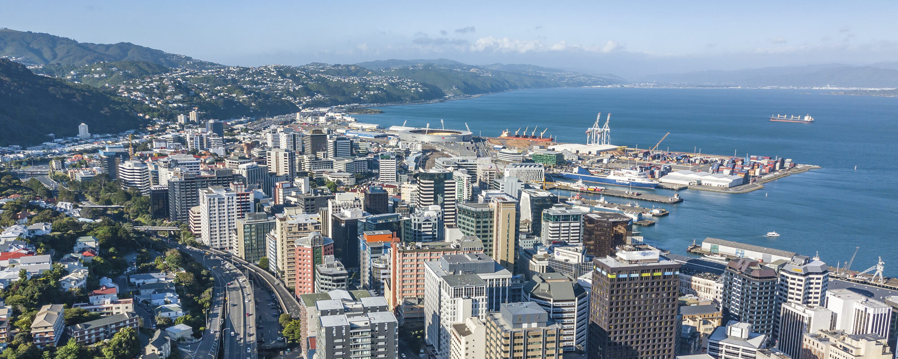

Wellingtons network infrastructure contains a variety of networks from what i witnessed when exploring Wellington i noticed two areas which are Public Transport systems and Powerlines and Secruity Cameras which i found to be both common and important in wellington as they are constantly being used alot by citizens in wellington in day to day life as these networks have alot of positive impact on us in our day to day lives
